注: 本文首发我的 b 站专栏文章CMU 15-445/645-笔记-06-Hash表
课程目标

目前已经讲过的内容
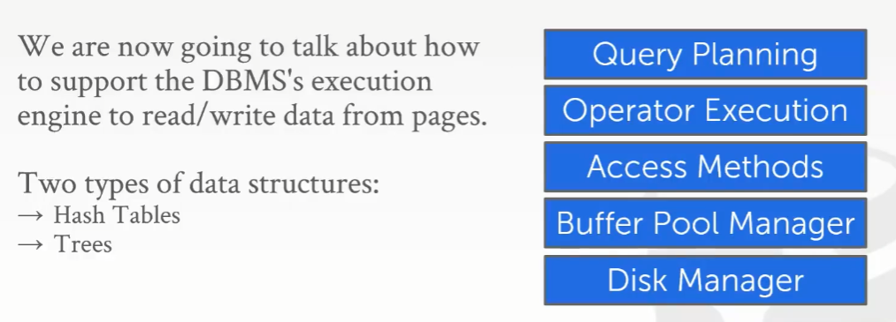
数据结构
memcache 本质上来讲就是一个超大的 hash table，而 MySQL 的 innodb 引擎使用的是 B+ tree，它们将 tuple 存储在 B+ tree 的叶子节点上
临时数据也可以用数据结构来维护（就是缓存），比如在执行一个查询时，为了高效地计算某些东西，可以在运行时构建一个数据结构，放入所需数据，完成查询的执行，然后将这个临时数据结构丢弃掉
表索引（table index）也有对应的数据结构，即使用 tuple 中的 key 来构建一个词汇表，有些像书中的目录，这样就能很快地找到那个对应的单个元素，也没必要对整个数据库进行循环扫描了
设计数据结构
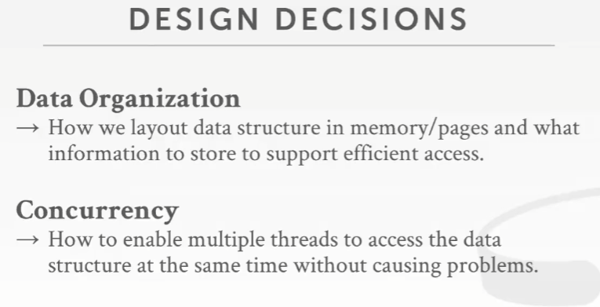
- 如何弄一个数据结构，使得无须对该数据结构进行大改或者每次要重新转换整个数据结构的情况下，支持快速读写
该如何让多个线程或者多个查询去访问这个数据结构，并且该数据结构表示的数据不会再物理存储层面出现问题，因为同时被线程修改的某个地址的数据会变成脏数据，从而让它们访问到某些无效的 page 或者是某些无效的内存位置
这里最关心的应该还是数据结构的 物理完整性，而不是 逻辑完整性
Hash 表
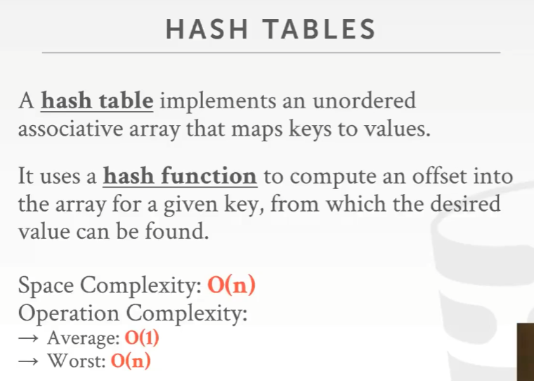
hash 表是一个抽象的数据类型，它可以提供无序的关联数据的实现（unordered associative array implementation）的 API
注意，hash 函数并不会一直让我们精确地找到我们想要找的东西，因为这会产生 hash 碰撞，但至少它能让我们找到正确的位置，然后我们知道该如何在周围找到我们想要的那个数据
hash 表操作时间复杂度最坏的情况为什么是 O(n) 呢？这是因为 key 通过 hash 都碰撞到一起，放在一个数据/队列/链表中了，所以这个时候就需要遍历查找想要的那个 key
虽然 hash 表操作平均时间复杂度为 O(1)，但不同的 hash 函数执行时间可能不一样，有些快有些慢，在面对超大规模基数的数据查询时，慢的 hash 函数会导致整个应用需要付出大量的金钱，比如商业交易这一场景
静态 Hash 表
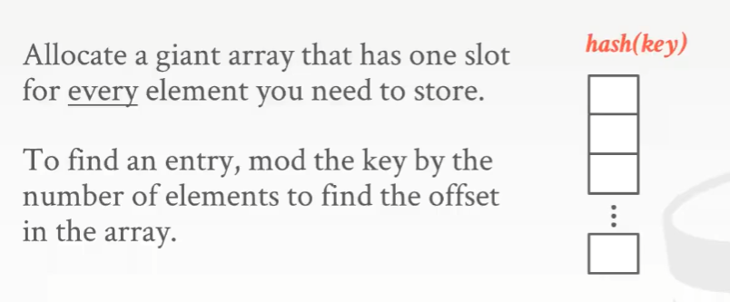
一个最简单的 hash 表如上图所示，它其实就是一个巨大的数组，看起来就像是一大块内存
数组中每个 offset 位置都对应了一个给定的元素
通过对 key 进行 hash，即将 key 与所有元素数量进行取模（如果该 key 对应这个数组的下标），就会得到它对应的 offset 值
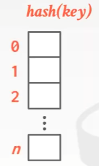
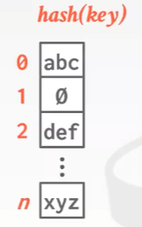但实际上 hash 表并不完全是这样，hash 表需要保存的是一些指向这些原始的 key 所在位置的指针
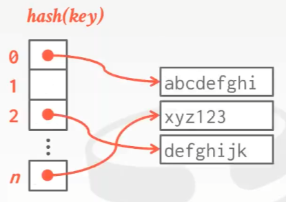
对于这种 hash 表而言，存在的问题是什么呢？
- 需要提前知道 hash 表中元素的数量
key 与 key 之间没有碰撞（collision）
碰撞 指的是，对 key 进行 hash 后的结果指向了同一个 slot
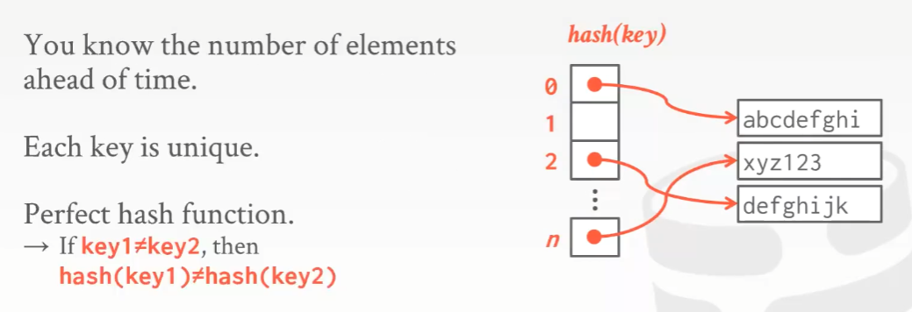
完美 hash 函数（perfect hash function）是一种存在于研究文献中的一种理论上的东西，因为在实际工作中，如果 key1 != key2，那么有可能 hash(key1) = hash(key2)。实际上能实现所谓完美 hash 函数的方式是通过另一张 hash 表将一个 key 映射到另一个 hash value 上（这种方式真的很蠢，因为速度会很慢），比如 Java 中的 concurrentHashmap，第一次 hash 是为了分区，第二次 hash 是为了确定具体位置，但也不能保证完美
那么该如何在摈弃上述两个假设的前题下实现一个 hash 表呢？
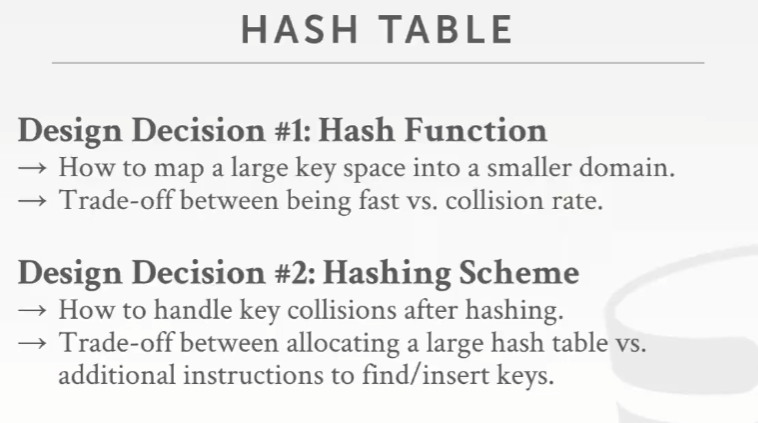
要实现一个 hash 表，它的数据结构应该是由 2 部分组成
hash 函数
该函数将任意的 key 映射到一个较小范围的 integer value 上，同时该函数会生成一个 32/64 bit 的唯一 hash 值（也可能不唯一）hash 函数的速度和碰撞率之间要做取舍
hashing scheme
即当在 hash 表中遇上 hash 碰撞时，用 hashing scheme 来处理这种问题，hashing scheme 是一种机制或者说步骤同样的，这个也需要在内存和计算（速度）之间做取舍，即时间换空间，空间换时间。
Hash 函数
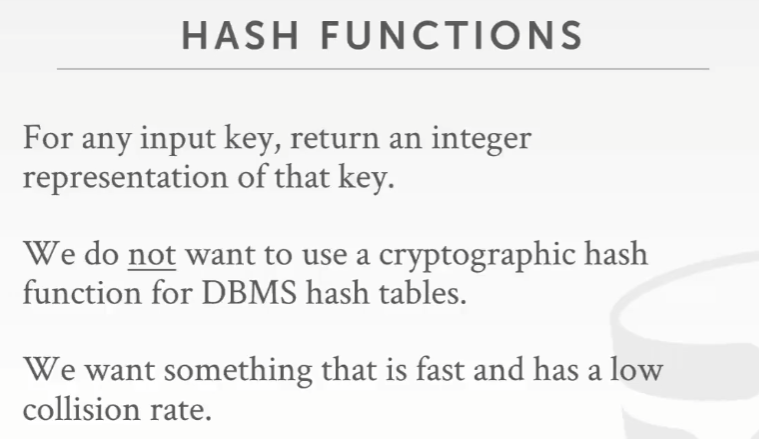
hash 函数就是一个速度很快的函数，将任意的 byte array 或者任意的 key 传入函数，它就会返回一个 32/64 bit 的 integer
比如一些著名的 hash 函数，比如 SHA-256/MD5
实际上 SHA-256 是不可逆的加密 hash 函数，它是一种使用了 公钥/私钥 的东西
对于 MD5 来说，可以将任意的 key 传入它的 hash 函数，然后返回一个 32 bit 的唯一 hash 值，它本来应该是不可逆的，但现在因为有人破解了它，所以可逆
在数据库系统中，如果要做 hash 表，那么我们对它的加密性并不在意，所以也不会去用 SHA-256（用这个加密速度也超慢）
MD5 是一种单向散列（one-way hash），可以将它作为构建 hash 表的 hash 函数，但没必要因为它还是非常慢。同时它也是不安全的，因为可以通过彩虹表对它进行破解
一些 hash 函数图
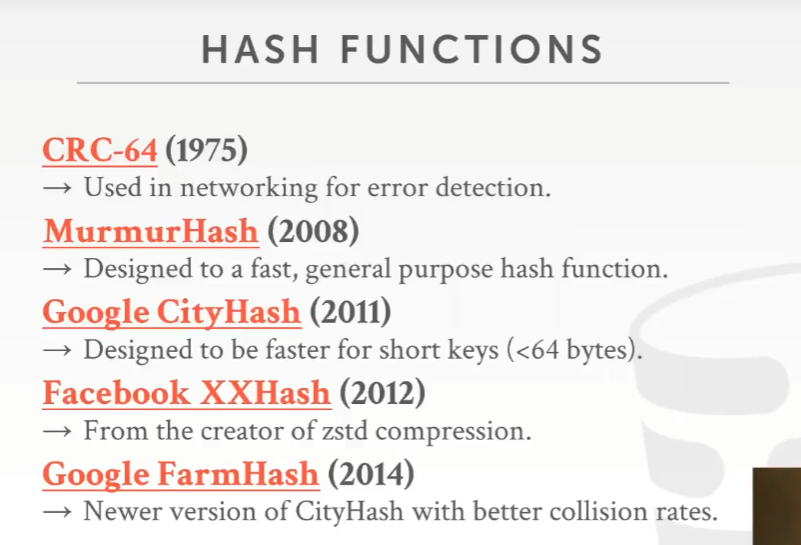
- CRC-64 是 1975 年被发明出来的，它的碰撞率虽然合理，但是速度非常非常慢
- MurmurHash，从数据库层面来讲，它的诞生开启了现代 hash 函数的时代。它在 2008 年诞生，是开源的。G 家在 2010 年早期采用了 MurmurHash，并对其做了改进，使得长度更短的 key 可以获得更快的速度，然后 G 家就发布了 CityHash。2014 年时他们由基于这个做了改进，然后发布了 FarmHash，它的碰撞率比 CityHash 更低
Meta 的 XXHash 的速度更快，碰撞率最低（这里指的是 XXHash 3）
2 张 hash 函数的 benchmark 图
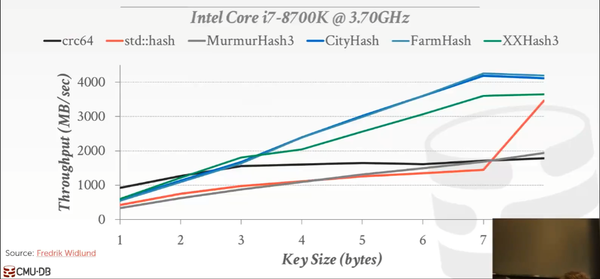
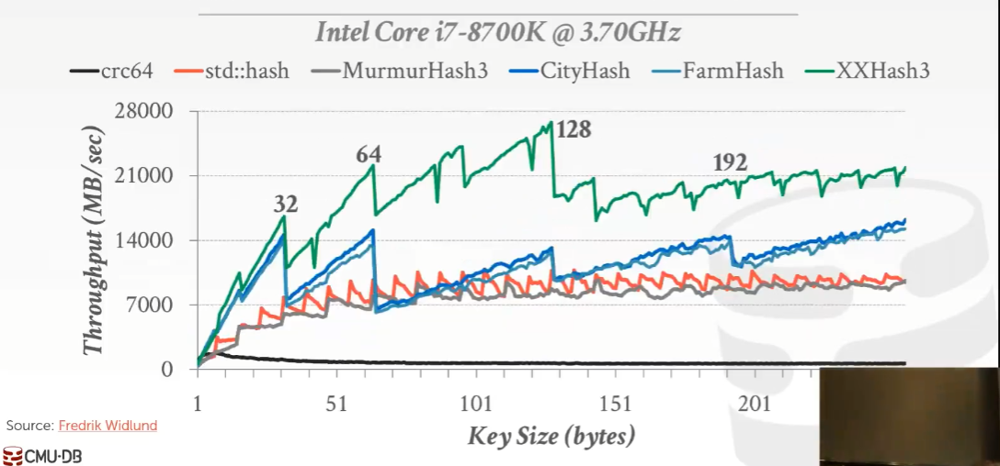从上图可以看到，当 key 的大小为 32 byte 和 64 byte 时，FarmHash、CityHash、XXHash3 都出现了非常漂亮的尖峰，这是因为它们进行计算处理的 key 都刚好填满单个 Cache Line（CPU 和主存之间数据传输的最小单位）。当从内存中读取一次数据时，将 64 byte 大小的 key 放入 Cache 中，这样就可以一次性操作所有从该缓存中找到的数据，即一次操作一整个 Cache line 中的数据。当 key 的大小超过 64 byte 后，CityHash 和 FarmHash 就会切换到另一种不同的算法上，导致速度上会有些不同
所以在数据库系统中，尽可能多地去使用 XXHash3
静态 Hashing Schemes
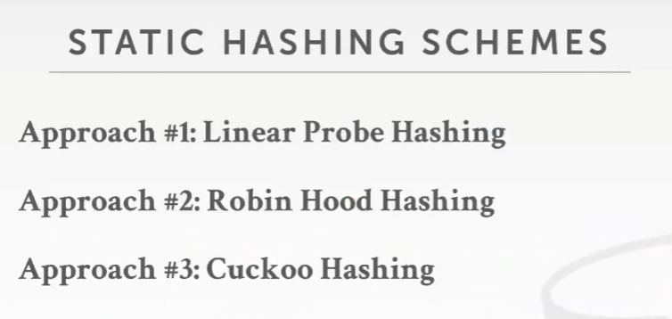
注意，此处讨论的内容跟所使用的 hash 函数没有关系，所有的 hashing scheme 的工作方式都是一样的，因为这是做完 hash 计算，跳转到某个位置时才做的
Cuckoo 和 Robin Hood Hashing 都是基于 Linear Probe Hashing 做的改进版
注意这些都是 静态 Hashing Schemes，意味着在分配内存时，一开始就得知道要保存的 key 的数量，在某些情况下，可以猜出这个 hash 取模的基数有多大（key % n，n 就是这个基数）。在进行查询处理或者使用 hash 表进行 join 操作时，需要知道在 hash 表中大概要对多少个 key 进行 hash，然后就可以进行内存分配了
如果 hash 表容量快满了，就必须对其进行扩容，基本上是扩展到原来的 2 倍。即将第一个 hash 表中所有的 key 复制到第二个 hash 表上，但这样做代价非常高（所有元素重新打散并 hash 存储，代价很高）
理想情况下，如果大概知道 hash 表的容量上限是多少，也就没必要去做扩容的操作了
Linear Probe Hashing
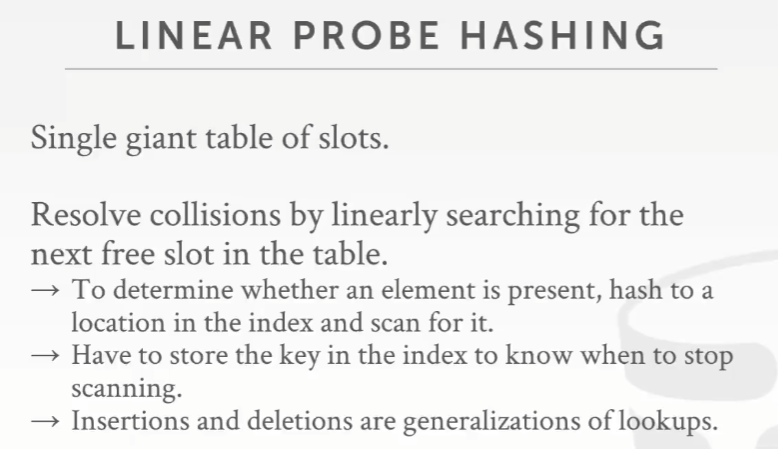
Linear Probe Hashing 有时也叫 Open Addressing，即开地址法，它就是一个大型的 slot 表，通过 hash 函数来跳转到该表中的某个 offset 值上，或者是在该表中添加一些 slot
Python 的 Dictionary 背后的数据结构其实就是 hash 表，它就是一个使用了 Linear Probe Hashing 的 hash 表
如何解决 hash 碰撞？如果在进行 hash 计算所得到的 slot 位置上已经有数据在上面，那么就挨着这条数据往下扫描，直到遇到下一个能插入数据的空 slot 为止（空的 slot 指没有找到 key 对应的 value）
一个例子
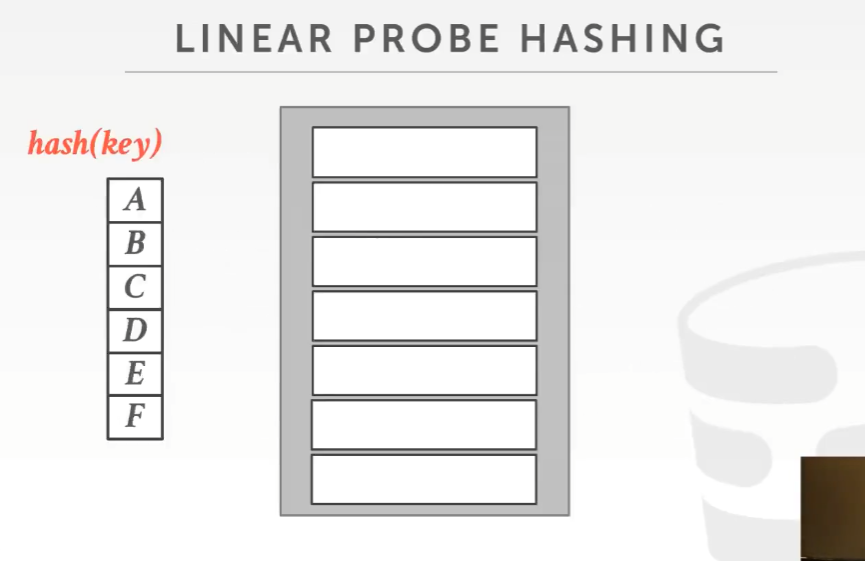
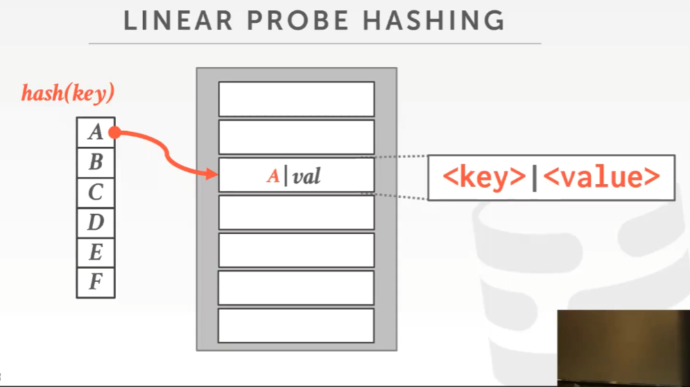slot 上会保留原始的 key/value 对，原始的 key 会有所保留的原因是，当要开始查找时，如果有多个 entry（key/value 对），那么就必须在 slot 上往下扫描，我们需要知道在该 slot 中存放的 key 是不是我们想要的那个，毕竟也没法保证根据 hash 计算得到的 slot 表中的位置就是我们想要的那个准确位置
比如对 C 进行 hash，但此时 C 落在了之前 A 的位置
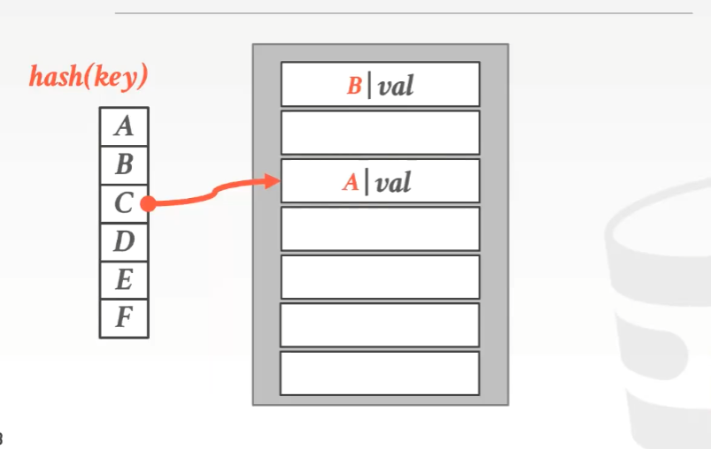
所以此时就直接跳到 A 的下一个位置，然后把 entry（这里指 key/value 对） 插入到那个位置上
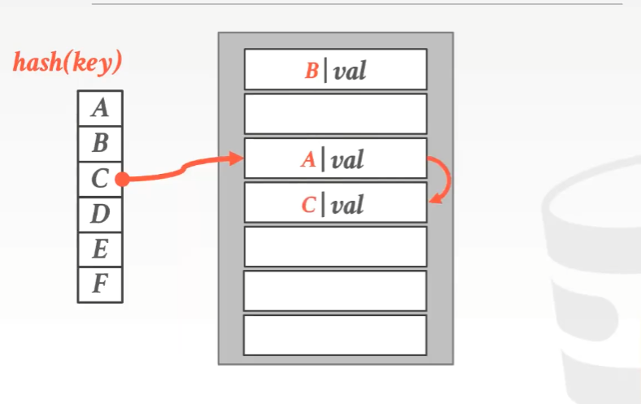
比如插入 E 也是一样的
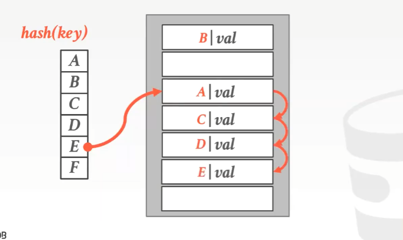
那么假设要删除 C，应该怎么做呢？
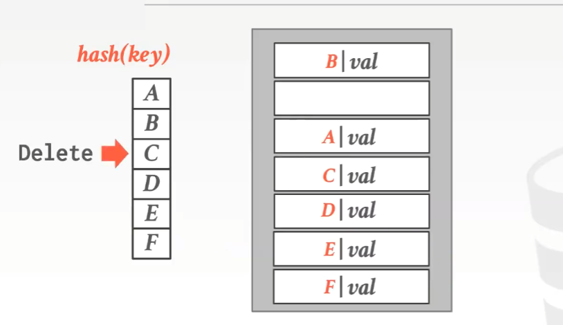
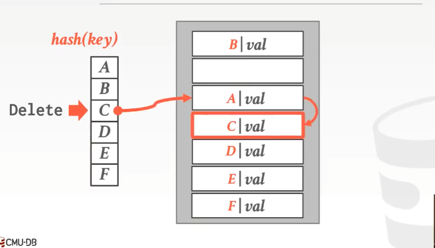先对 C 进行 hash，hash 完后，找到的是 A 所在的位置，但这并不是要删除的那个数据，于是继续往下扫描，找到了 C，直接移除
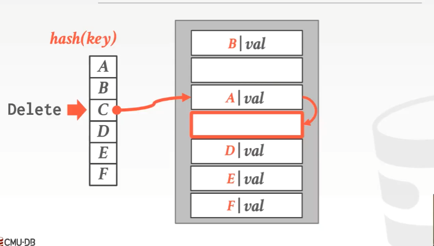
但是这里会有一个问题
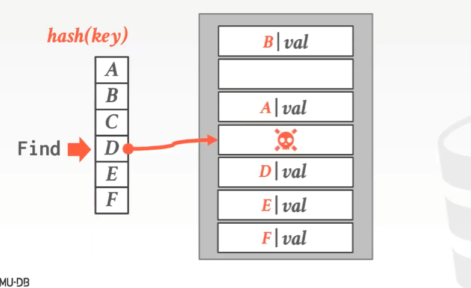
如果去查找 D，那么它会发现 C 的位置是一个空 slot，那么它就认为它的查找已经完成了，即便这个 D 所对应的数据是在下面的
所以有两种方式来做移除
tombstone
即在原来 C 的位置上放一个这个标记，表示这里没有一个 logic entry 了，但从物理上来讲，这个 slot 是被占用了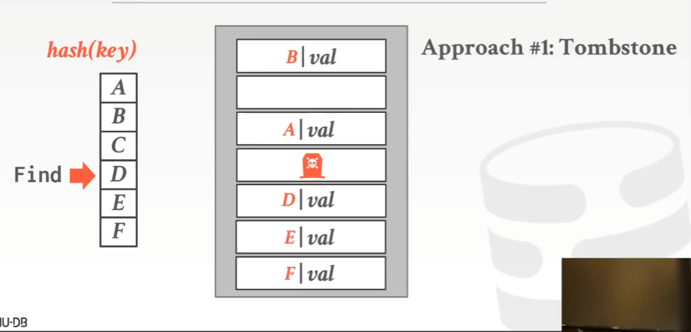
当查找 D 时，会落到这个有 tombstone 标记的 slot 上面
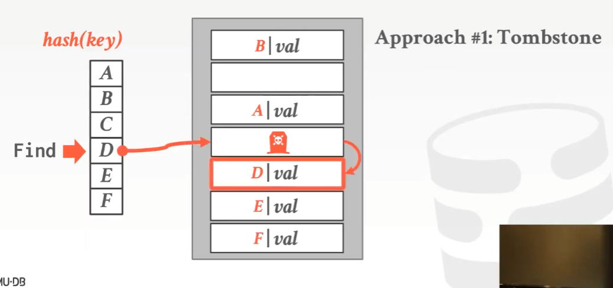
然后虽然这个 slot 中没有数据，但它确实不是空 slot，所以直接跳到下一个
但，这就浪费了空间。这需要后续清理掉，并用上 fill factor（填充因子）
data movement
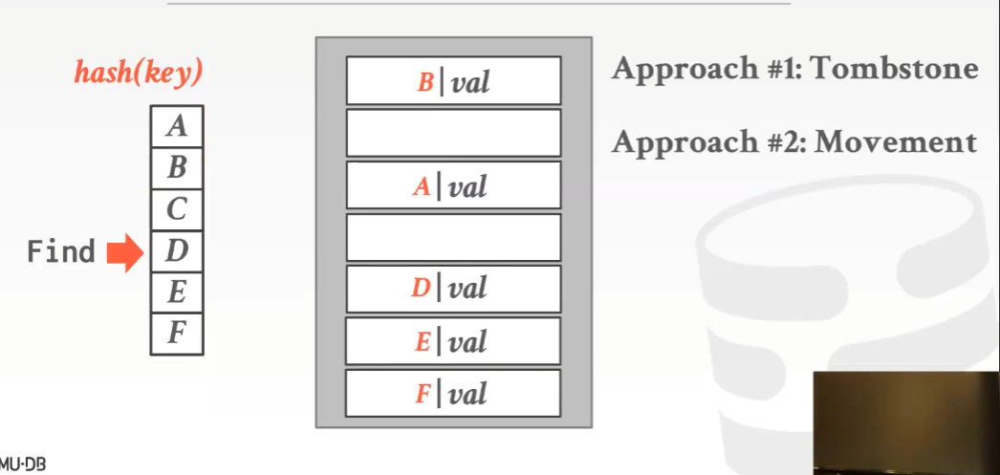
就是做数据移动，看到有空数据往上移动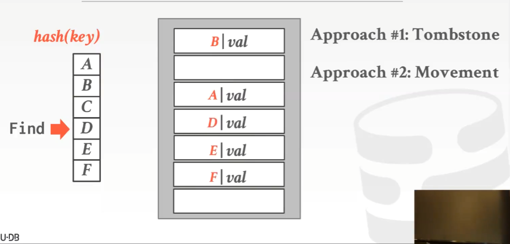
但要记住这个 slot 表是 环形 的
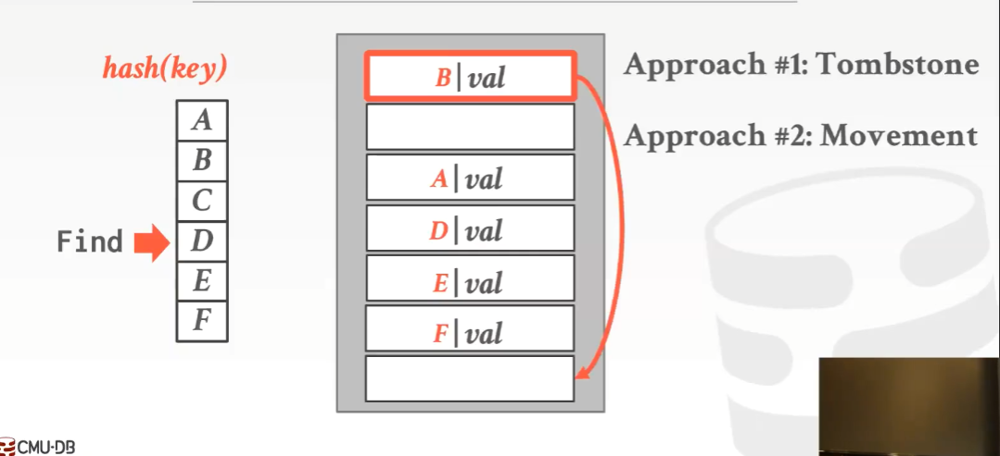
技术上来讲，B 应该是在 F 后面的，虽然物理上不是，如果像上图中那样，将 B 移动到箭头所指向的位置，可能会导致某些错误发生
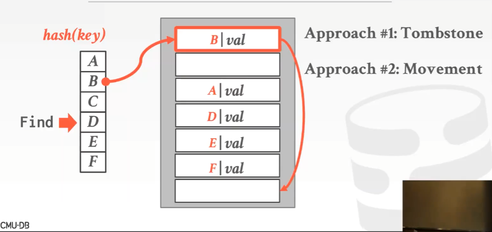
因为 B 原来 hash 的位置是在上面，如果移动到下面的位置，在查找 B 时，会看到那里啥都没有
所以大部分情况下都会去使用 tombstone，数据移动这种方式实际上很复杂
在实战中，一般使用 n 或者 2n 作为 slot 的数量，n 为要放入 key 的数量
Robin Hood Hashing
在了解这个之前，得先了解 Non-Unique Keys，即非唯一 Key，因为在实际的数据集中，没办法假设所有的 Key 都是唯一的，所以需要在 hash 表中对它们进行处理，有 2 种方法可以做到
第 1 种方法是，维护一个单独的链表，上面保存了所有的值。即在 hash 表中的 key 会指向属于该 key 的单独链表，该链表上所保存的 value 对应的都是同一个 key
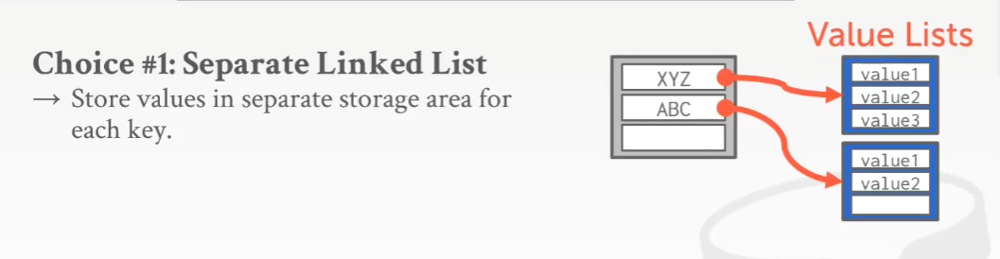
第 2 种方法是，保存冗余的 key，这也是最常见的。即在 slot 数组中不断地复制这个 key
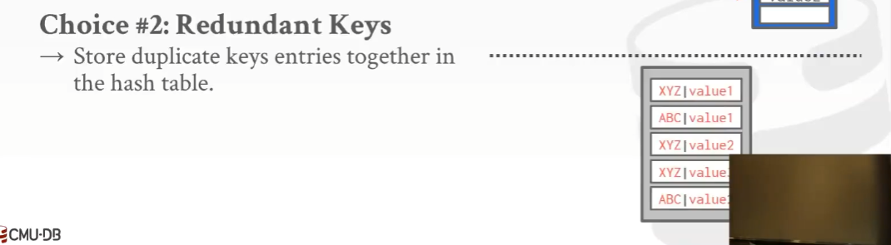
在实战中，第 2 种方法用的多
Bobin Hood Hashing 是在 1985 年提出的，出自当时一篇无人问津的 paper，然后过去 10 年，它在 Hacker News 上出现过几次。而 Bobin Hood（罗宾汉）是一个英国的民间传说，讲述的是一个劫富济贫的侠盗的故事。那么 Bobin Hood Hashing 做的事情也是类似的，就是会让那些 “poor” key 从 “rich” key 身上偷取 slot
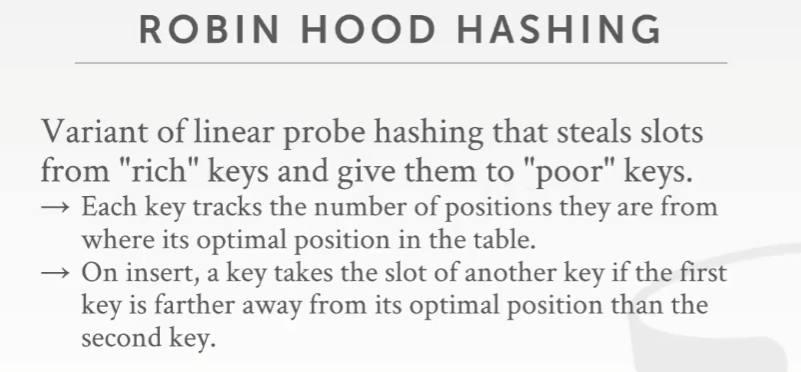
Number of Positions（距离数）表示的是你所在的位置与你第一次进行 hash 所计算出的位置之间的距离差。
距离数越大，越 “poor”，反之越 “rich”
基本思路是，对整个 hash 表进行平衡，尝试让每个 key 都尽可能靠近它原本所在的位置。即对所有的 key 来讲，在全局状态下尽可能快地找到它们，而不是针对于某一个。
一个例子
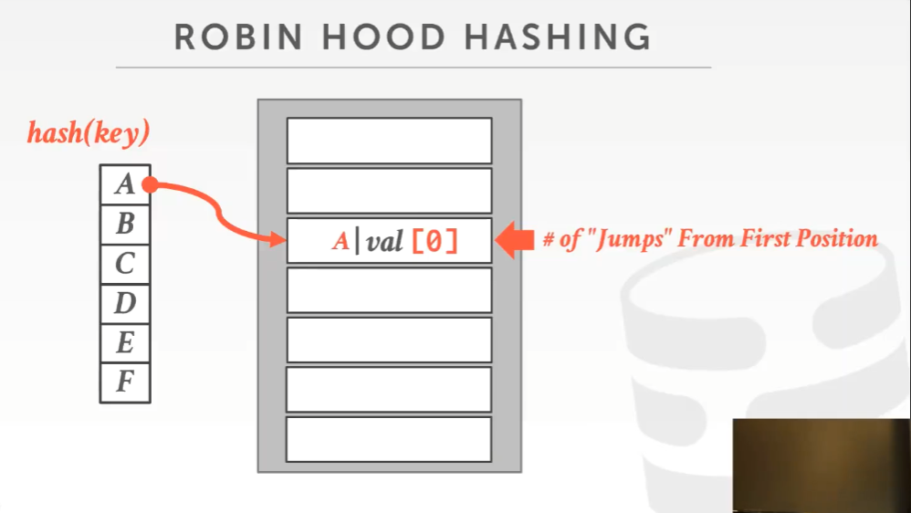
在插入数据 A 时，可以记录下数据 A 实际所在的位置与第一次 hash 计算出的原始位置所差的跳转次数
第一次插入 A 时，跳转次数为 0，所以是 A | val[0]，对于 B 也是一样
C 要插入时，本来要插 A 的位置，但因为 A 的位置不是空的，所以它插入到 A 的下一位
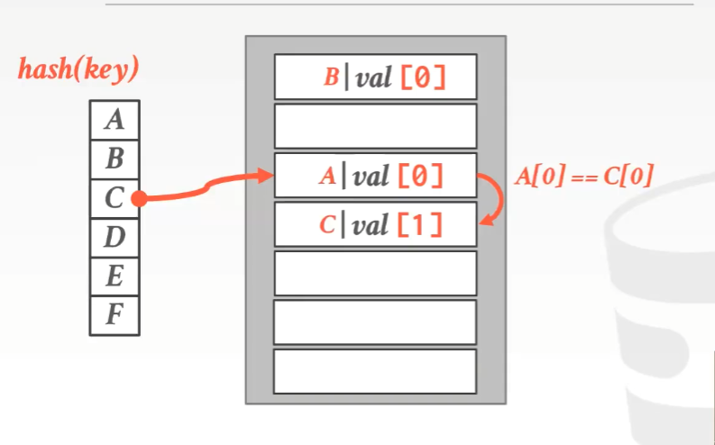
所以是 C | val[1]，因为 C 当前所在的位置距离它第一次通过 hash 所得出的位置相差 1 个单位
对于 D 来说也是一样的
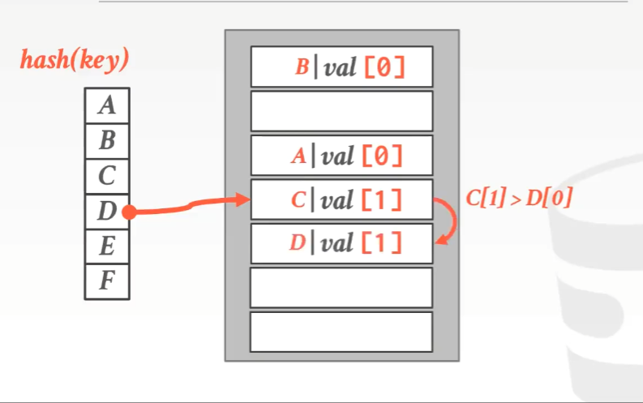
而对于 E
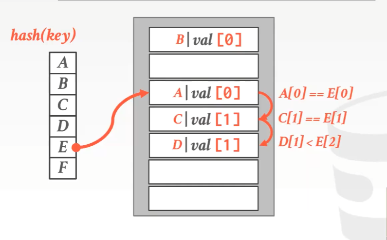
因为 E 需要跳转 2 次才能达到 D 跳转一次的位置（D 跳转一次就到它原本第一次 hash 计算出来的位置了），E[2] > D[1]，所以 E 比 D 要更 “poor”，所以 E 就要去 偷 D 所在的 slot 的位置，并插入其中
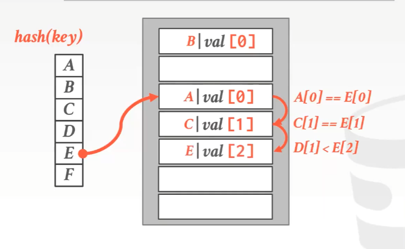
那么现在就只能将 D 插入到 E 的下面了，并将 D | val[1]，更新为 D | val[2]
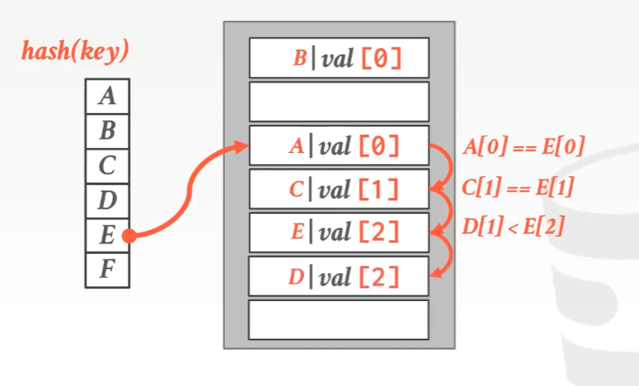
而 F 就是放到 D 下面
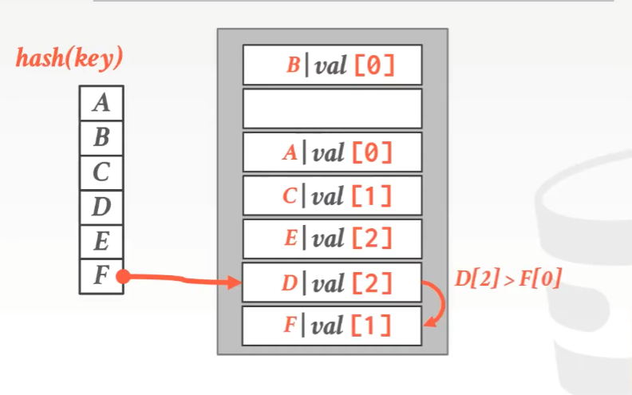
这种方法会使得写入或者插入的代价更高，因为这种方式进行了多次写入的操作，而 Linear Probe Hashing 只需要一次写入
但是在该算法下，需要对更多的条件进行检查，看看能否将一个放到另一个的位置上，只要有一次条件误判，就会付出巨大的代价。更多的写入操作带来更多的缓存无效。所以在实战中，还是优先使用 Linear Probe Hashing，它依然是最快的方法
Cuckoo Hashing
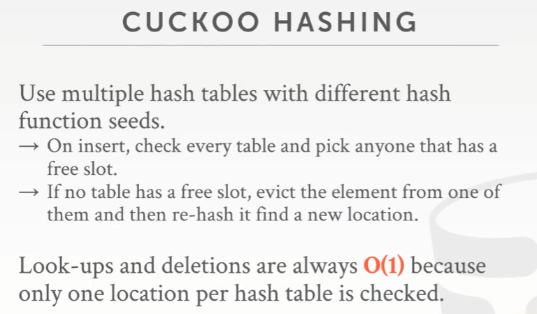
思路是，使用多个 hash 表，然后要做的是该判断往哪个 hash 表中插入 key，即哪个 hash 表能提供一个空余的 slot
在 Cuckoo Hashing 中，查找和删除的时间复杂度始终是 O(1)，这意味着当进行查找时，始终都会跳到 hash 表上，准确地找到那个数据
但插入操作的代价可能更高，因为要判断是在 hash 表 1 中还是 hash 表 2 中进行存储等操作
例子
注意大多数人在使用 Cuckoo Hashing 时，通常都只使用 2 个 hash 表
对于 Cuckoo Hashing 中的每个 hash 表来说，必须为 hash 函数提供一个单独的 hash seed，拿到 key 之后，对它 hash 2 次（这里对同一个 key，给 hash 函数不同的 seed，那么就会生成不同的 hash 值）
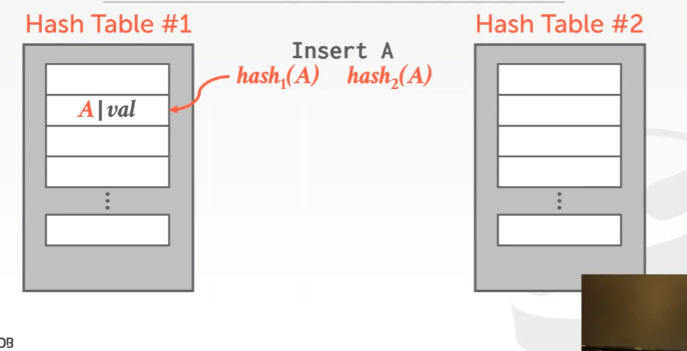
这个时候要插入 B 了
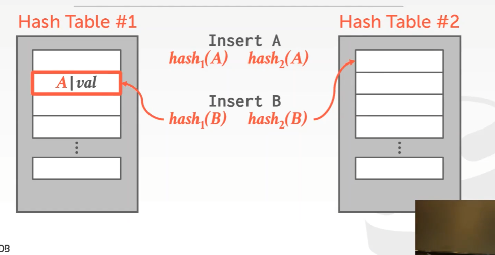
但是在 hash 表 1 中，对应的位置已经有 A 了，这个时候就选择 hash 表 2 插入
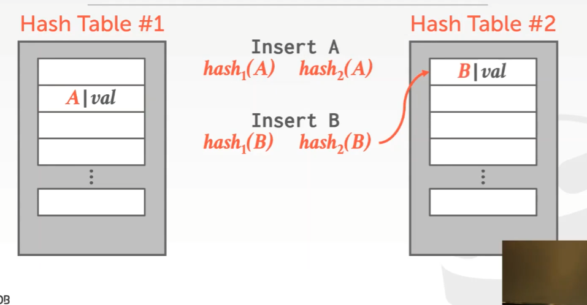
这个时候插入 C
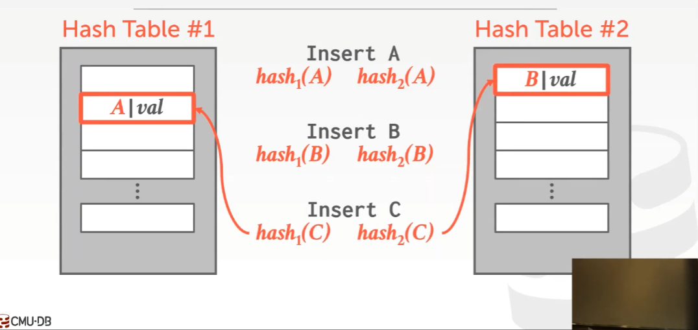
但现在 hash1(C) 和 hash2(C) 的位置都被 A 和 B 占了，这个时候该怎么办呢？
答案是随机选一个，这里选的是 hash 表 2，然后移除掉 B，插入 C
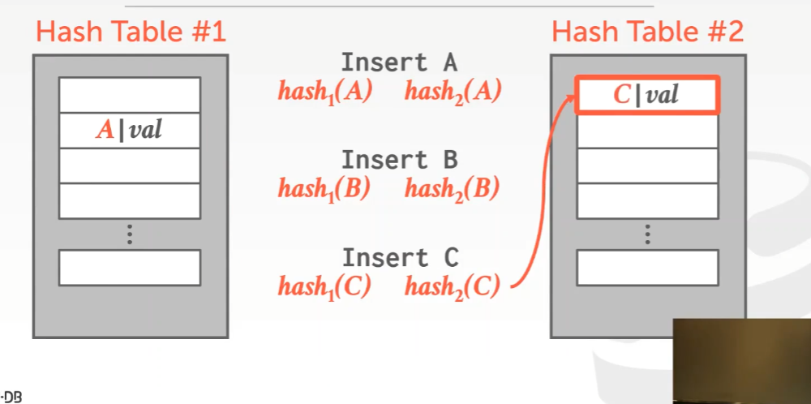
那么 B 怎么办呢？重新 hash 一下 B，抢走 A 的 slot
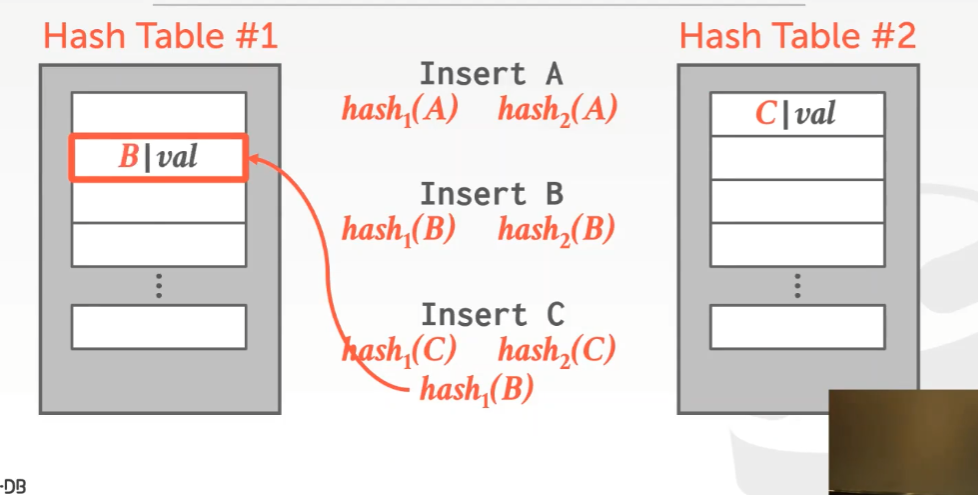
那么 A 怎么办呢？重新 hash 一下 A，把 A 放到 hash 表 2 中的一个空 slot 的地方
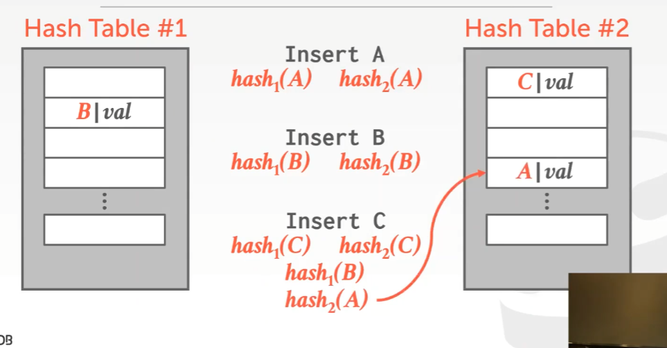
但这个方式存在 递归碰撞，即有可能在碰到最后一个元素后，又碰到最初的那个元素去了，这种情况下，需要扩容（卧槽，这 tm 扩容。。。）
动态 Hash 表
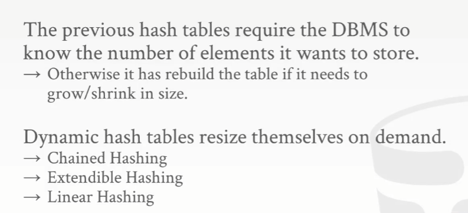
动态 hash 表能够在无须重建整个东西的情况下，根据需要调整大小，比如 chained hash table，这是最常用的一种动态 hash 表
Chained Hash 表
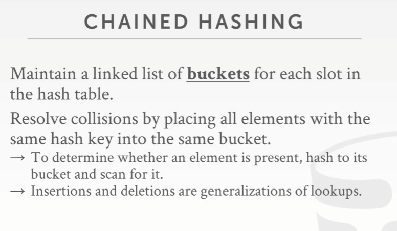
也叫 chained hashing/bucket hash table，里面主要维护了一个包含了 bucket 的链表，通过将具有相同 hash key 的所有元素放入相同的 bucket 来解决冲突，也就是在 bucket list 末尾追加，所以每个 bucket chain 都可以永远扩容下去
所以要查找的话，也只能循环扫描了
例子
可以将这些 bucket 当作是 page
Extendible Hashing
基于 chained hash 表的思想，但是不同于它的无限扩容，Extendible Hashing 要做是将链表逐步拆分
这里 “拆分” 的意思也跟 “重建” 差不多，也要进行一波扩容并重新 hash 的操作，但这里只是对 某个独立的局部 进行操作
要拆分的只是那些要 overflow 的 chain，而不是整个 hash 表
拆分完那些 overflowed bucket 之后，在其对应的 slot array 中，允许多个 slot 指向同一个 bucket chain
优势是，在移动数据时，只需要移动那些 overflowed 的 bucket 就行
例子
要有 1 个 全局 counter，它负责 bit 的数量，即负责需要看几个 bit 才能去找对应的 bucket
而对于每个 bucket chain 或者每个 bucket，给它们一个局部的 counter，表示需要看几个 bit 才能找到该位置
在这个例子中，第 1 个 bucket 中的局部 counter 的值是 1，表示只需要看 1 bit 就能定位到这个 bucket
这就是为啥你看那个蓝色圈出来的 bit，看 00 和 01 时，它们俩都会映射到同一个 bucket，因为它们第 1 个 bit 都是 0，因为这个 bucket 存在 overflow 的情况，还没有对它进行拆分
另外 2 个 bucket 拥有的分别是蓝色圈出来的 10 和 11，因为它们的局部 counter 的值是 2，也就是说需要看 2 个 bit 才行
现在假设要查找 A
注意这里生成的 hash 是一堆 bit 序列
然后看下全局 counter，它会检查这个 hash 函数生成的 bit 序列中的前多少位，以此来决定要跳转到哪个 bucket
例子中全局 counter 的值是 2，那么只需要看这个 bit 序列的前 2 位，即 01，然后在 slot array 中查找
找到 01，跟着指针，就找到了对应的那个 bucket
如果这个时候要插入 B
因为全局 counter 是 2，那么看 B 的前 2 位，是 10，跟着 slot array 中 10 指的位置，第 2 个 bucket 那儿有一个空余的位置，插入它即可
如果这个时候要插入 C
C 目前要插入的位置是第 2 个 bucket，但是此时第 2 个 bucket 没空间了，它变成 overflowed 的了，所以现在必须要对它进行拆分
怎么拆分呢？
先把全局 counter 增加到 3
然后将 slot array 扩容到原来的 2 倍，这样就可以处理 3 bit 的情况了
注意，这个 slot array 的扩容操作代价很低，因为这只是一个指针数组，可以在上面用一个 latch 来保护它，调整完大小再将数据放回去，无须移动 bucket 中的数据
如上图，对 bucket 进行重构，将保存在这些单个 page 上的数据进行拆分，并根据局部 counter 中的值，将它们重新映射
现在再尝试插入 C
3 个 bit，C 的 hash 结果的前 3 位是 101，找到 slot array 中 101 的位置，跟着它的指针，即能找到对应位置插入
注意这里并没有对全部的 bucket 进行拆分，而只是拆分了之前那个 overflowed 的 bucket，即之前的第 2 个
删除操作其实就是将插入操作逆向执行
每个 bucket 就是 page
Buffer 池中可能存储的是一张表下涉及的多个 page 的数据条目，也可能是多个表下的部分数据条目
Linear Hashing
Extendible Hashing 存在一个小问题，就是要拆分 overflowed bucket 时，需要将 slot array 扩容为原来的 2 倍大，在调整 slot array 的大小时，需要在上面使用一个 latch，这样能保证直到重新分配完所有的数据为止，其他人不会对其进行读写
这会成为一个性能瓶颈，因为这个 hash 表同一时间可能会被多个人访问
Linear Hashing 的思路是，只需要去重新分配那些 overflowed bucket 即可，没必要去用一个全局的 latch 来阻止所有人访问这个 hash 表
那么如何做到呢？
Linear Hashing 会去维护多个 hash 函数，这些 hash 函数的工作方式和之前讲到的 Cuckoo Hashing 中相同，用不同的 seed 对给定的 key 生成不同的 hash 值，然后找到那个对应的 bucket
这里需要维护一个新的东西，叫 split pointer，它会去跟踪那个要进行 split 的 overflowed bucket
例子
初始状态下，这个 split pointer 指向 slot array 的第 0 个
此处 hash 函数中的 n 即拥有的 entry 的数量
假设现在要去查找 key 为 6 的相关数据
6 % 4 = 2，那么在 slot array 中就是 2 所在的位置，顺着其指针找，找到第 3 个 bucket，然后在 bucket 中顺序查找比对 key，就找到了对应的位置
假设现在要插入 17
那么 17 % 4 就是 1，找到 slot array 中 1 所在的位置，顺着其指针找，找到第 2 个 bucket，但在这个 bucket 中，没有空余的 slot，那么怎么办呢？创建一个 overflow bucket，在这个上面放 17 这个值
因为现在创建了一个 overflowed bucket，就相当于触发了一次 overflow，所以现在不管这个 split pointer 指向的是哪个 bucket，对应 bucket 现在都要进行一次拆分，比如图中的第一个 bucket，哪怕这个 bucket 还可以存数据
拆分的工作方式是这样的
在 slot array 的地方再增加一个 entry，也就是新增了一个格子 4。用一个新的 hash 函数，即 key % 2n，而这个 split pointer 会帮助我们跟踪，该使用第 1 个还是第 2 个 hash 函数，它也会告诉我们，在 slot array 中，拆分 bucket 的距离有多远
然后在 slot array 为 4 的位置，新增一个 bucket，把 20 放入这个新增的 bucket 中。
然后将这个 split pointer 下移一个单位
那么如果此时再想进行一次查找时，首先用第一个 hash 函数对其进行 hash
如果此时 hash 得到的结果所指向的位置时在 split pointer 所在的这条分界线之上，那么就知道正在查找的那个 bucket 已经被拆分了
因此现在就应该使用第 2 个 hash 函数来去找数据，因为数据肯定不在原来要拆分的那个 bucket 上
如果是查找 9 ，逻辑也是一样的
9 % 4 = 1，因为在 1 所在 slot array 的那个位置 在 split pointer 分界线之下，所以它是没有被拆分的，所以使用第一个 hash 函数是对的，那么就可以顺着指针直接去找了
然而算法最糟糕的情况是，每个人都往同一个 bucket 中插入数据，这会导致它花了很长时间对 bucket 进行拆分，但使用一个具备低碰撞率的优秀 hash 函数的话，可以解决这个问题
如果进行删除操作，split pointer 会往回移动，不过如果要实现会相当棘手
例子
假设现在要删除 20
如果用第 1 个 hash，那么它算出来就是 0，但此处的位置是在 split pointer 的分界线之上，所以需要用第 2 个 hash
于是在 slot array 的 4 这个位置，delete 对应的 bucket 里的 20
那么这个 bucket 就空了，如果要回收，就是反向操作
首先清掉这个空 bucket，并且清掉指针
然后将 split pointer 往回移动一个单位
现在，分界线消失了，第 2 个 hash 函数也没了，内存回收完毕
（这里 4 的消失，我认为也是随着指针清空然后这个也被 remove 掉了）
如果回收完后 紧接着 是下面这种情况，在 overflowed bucket 中插入一个 21
就会触发 overflow（因为 slot array 的位置 1 对应的 bucket 放不下，要放到其 overflow bucket 中），那么又要根据算法拆分 bucket
算法做了很多事情让插入更快，但很难做到快速删除
结论
hash 表没办法比较 key 的大小，所以不适合用于表索引的一些场景
相反，在创建索引时，最常用的就是 B+ Tree